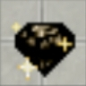
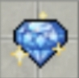
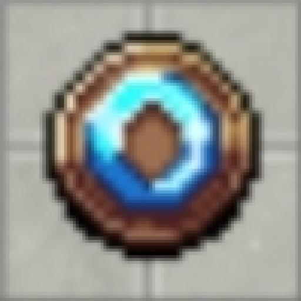
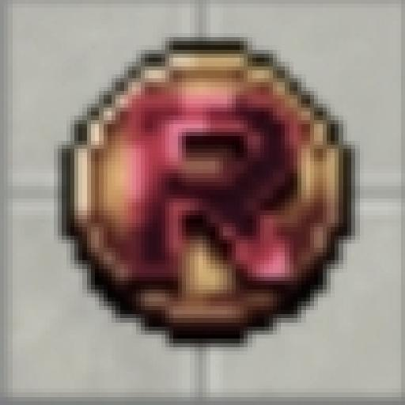

Moedas e Pontos do Jogo
Temos diversas moedas no game. Abaixo fazemos uma breve apresentação e mostramos as formas de conseguir cada uma delas.

💲 Space coin 💲
Moeda donate do game.
Como conseguir?
- Principal: Doando ao servidor.
- Secundárias: Comprando de players, eventos ou vendendo itens no market por Sp.

💎 Black diamond 💎
A porta de entrada para a maioria das moedas.
Como conseguir?
- Principal: Drop de pokémons, mineração e venda de itens/pokémons no shop do jogo.
- Secundárias: Towers, eventos e vendendo itens no market.

💎 Small Diamond 💎
Mais valioso que BD, é sua forma refinada.
Como conseguir?
- Principal: A cada 1k de Black Diamond, você pode dar "use" e transformá-los em Small Diamond.
- Secundárias: Eventos, market e ranking de dano no boss global.

🕚 Online points 🕚
Pontos por ficar online in-game.
Como conseguir?
- Principal: A cada 1 hora jogada, você ganha 1 ponto online.
- Secundária: Vendendo itens no market do game.

🟣 Reset coin 🟣
Uma das moedas mais valorizadas do game.
Como conseguir?
- Principal: Dungeon Hard.
- Secundárias: Tower 15k, eventos, vendendo itens no market e Comprando por Black Diamond na loja do game.

📓 Task Points 📓
Uma moeda de missões.
Como conseguir?
- Principal: Completando as tasks diárias no painel de tasks.
- Secundária: Negociando com players.